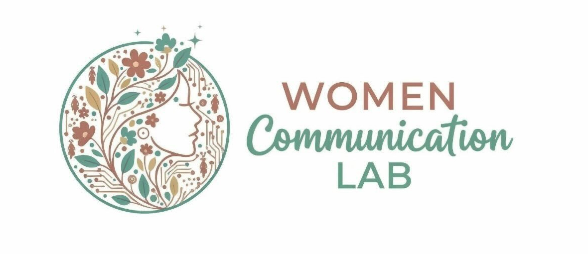

自分の本音を知る力
「本当は何が嫌なのか」「本当は何が欲しいのか」。言葉にならなかった感情が、少しずつ輪郭を持ち始めます。

LINEで無料相談してみるPAIN
本音が言えず、いつも我慢してしまう
この人と結婚していいのか、決められない
どんな人を選べばいいのか、わからない
恋愛テクニックを試したけど、なんか違う
自分が本当に望んでいることがわからない
ありのままの自分では、愛されない気がする
うまく言葉にできなくて、すれ違ってしまう
結婚したら、自由がなくなる気がして踏み出せない
もしひとつでも当てはまるなら、それはテクニックが足りないのではなく、あなた自身の本音に、まだ気づいていないだけかもしれません。
INSIGHT
巷の恋愛コーチングは、男性に選ばれるためのテクニックを教えます。ライフコーチは、目標設定と行動計画をサポートします。どちらも素晴らしいアプローチです。
でも、「テクニック通りにやったのに、なんか違う」「目標を立てたのに、心がついてこない」——そんな経験はありませんか。
それは、出発点が「外側」にあるからです。Women's Communication Labの出発点は、あなたの内側です。正解を教えません。答えを出しません。あなたの本音と向き合う問いを投げかけ、あなたが自分の答えを見つけるまで、隣で伴走します。
心が変わると、言葉が変わる。
言葉が変わると、関係が変わる。
関係が変わると、人生が輝く。
BENEFIT
「本当は何が嫌なのか」「本当は何が欲しいのか」。言葉にならなかった感情が、少しずつ輪郭を持ち始めます。
Iメッセージを使った伝え方、言葉の選び方、言うタイミング、言う時のマインドを磨きます。
「世間の普通」ではなく、「私にとっての最高の形」を哲学的な対話を通して描きます。
姿勢、呼吸、目線、振る舞い。一生ものの所作を身につけ、内側の変化を見た目にも表します。
ありのままの自分でいい、と心から思えること。それが人生全体を輝かせます。
STORY
はじめまして、chiakiです。
私は子どもの頃から、人の感情と言葉の間にある「ズレ」が気になっていました。一人っ子だった私は、両親の関係が壊れていく中で、それぞれの言い分を聞き、剥き出しの感情を、相手に伝わる言葉に変換し続けました。
その後、客室乗務員として10年間・地球90周分を飛び、世界中の多様な文化・価値観と出会いました。「日本の普通」の外に、無数の生き方があることを体で知りました。
26歳のとき、がんを宣告されました。キャリア、パートナー、結婚、出産——「もう手に入らないかもしれない」と思った瞬間、初めて「自分はどう生きたいのか」という問いと向き合いました。
29歳で、本音で話せる相手と結婚しました。2025年には、生後4カ月の赤ちゃんと家族で2カ月間ヨーロッパへ。結婚しても、子どもができても、やりたいことは諦めない。それが、私たちの夫婦の形です。
「初めて、理想の夫婦像を見ることができた」
私自身が、このサービスの実証例でありたいと思っています。
PROGRAM
あるのは、あなたが初めて答える、あなたへの問いだけです。
世界旅行のシェアとジェンダーデータをもとに、「結婚＝こういうもの」という思い込みをほぐします。
問い：「世間の目を100%無視したら、どんな夫婦になりたい？」夫婦というチームの役割分担、理想の24時間、譲れない価値観をテーマに哲学対話を行います。
問い：「お金も時間も諦めなくていいとしたら、どんな役割分担をしたい？」印象診断と一生ものの所作を学び、実際のディナー形式で体験。最後に「ネクスト宣言」を行います。
各回の前後に、chiakiとの1on1セッション（90分）を設けています。グループで話す前に気持ちを整理し、話した後に自分の気づきを深める時間です。
VOICE
「ワークの中で気づいたんです。私が好きだったのは『安心できる人』じゃなくて、『たまに連絡が来るドキドキ』だったんだって。自分から別れを告げたら、モヤモヤが消えました。転職活動にも、初めて一歩踏み出せました。」
「これまでずっと、相手の望みを叶えることが正解だと思っていました。でもワークを通じて気づきました。自分の本音を話すことが、相手にとっても好印象なんだと。」
TRUST
客室乗務員として10年・地球90周分の乗務経験
日本の固定観念にとどまらない、世界の多様な価値観と出会ってきた。
両親の離婚調停に深く関わった経験
剥き出しの感情を、相手に伝わる言葉に変換する力を幼少期から培った。
26歳でのがん経験
「自分はどう生きたいか」を人生の危機から問い続けてきた。
29歳で結婚・家族でヨーロッパ2カ月
「自由と結婚は両立する」を自ら体現している。
資格や肩書きではなく、chiaki自身の人生が、このサービスの根拠です。
FAQ
「今の彼との関係をどうすればいいかわからない」「この人と結婚していいのかな、と迷っている」「自分が本当に何を望んでいるかわからない」という方が多いです。年齢は20〜30代の独身女性が中心です。
はい、大丈夫です。「いつかパートナーと深く繋がりたい」という気持ちがあれば十分です。
はい、受けられます。自分の本音と価値観を知ることが最初の一歩です。
各回の前にchiakiとの1on1セッションがあります。安心して臨んでいただけます。
大丈夫です。正解を言う場所ではないので、うまく話せなくていいんです。
はい。全セッションオンラインで完結します。全国どこからでもご参加いただけます。
ありのままのあなたで、幸せになっていい。その最初の一歩を、一緒に踏み出しませんか。
LINEで無料相談してみる 返信はchiakiが直接行います。営業・勧誘は一切しません。